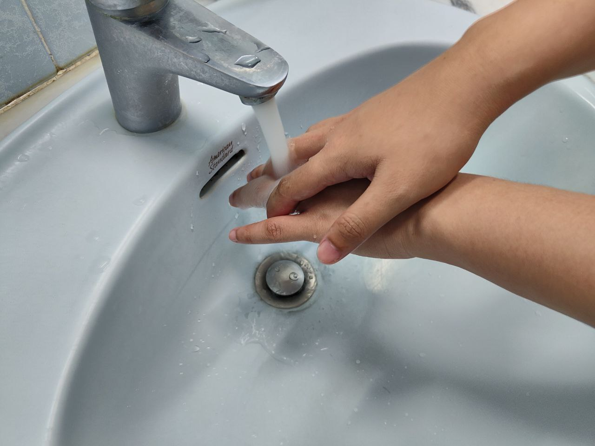

Instruction
welcome to our Zensiphus IoT device. In this page, we will tell you step by step of how to use our device to ensure the usage to be as accurate as possible .
Step 1: Prepare yourself

In order to get as accurate ass possible, you need to make sure no external noise to interrupt the device by wash your hand and clean both device and your body using alcohol.
step 2: Locate the position
You have to put the right node to the right location in order to make it works properly.
1. the yellow node on right side of your chest.
2. the red node on left side of your upper chest.
3. the green node on right side of your lower chest.
Step 3: wait
Now the device is ready to be use. Wait for the device to read your heart rate for around 5 minutes.
Step 4: upload it to the website


connect the device with your computer via bluetooth or wifi, it will automatically upload your file to your computer. Then, upload your file to the website.
The result will be show on the screen and it mean that your process is done.
don't forget to throw the node's head from the wire and discard the head.